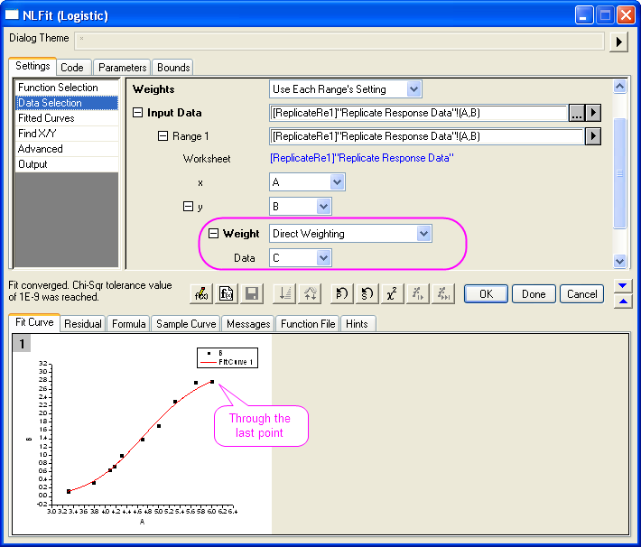

Anpassungskurve durch bestimmte Punkte
Zusammenfassung
Dieses Tutorial zeigt Ihnen drei Methoden, mit denen Sie eine Anpassungskurve 'zwingen' können, durch einen bestimmten Punkt zu gehen. Die Wahl der Methode hängt von dem Funktionsausdruck und dem Datenpunkt ab, durch den Ihre Kurve verlaufen soll.
Was Sie lernen werden
- Verschiedene Methoden, um den Verlauf einer Kurve durch einen bestimmten Punkt zu bewirken
- Festlegen von Anpassungsparametern während der nichtlinearen Anpassung
- Verwenden der allgemeinen linearen Nebenbedingungen bei der nichtlinearen Anpassung
- Anpassen mit Gewichtung
Beispiel und Schritte
Funktionsparameter festlegen
Diese Methode funktioniert nur, wenn der Punkt, den Sie anpassen möchten, in Bezug zu einem Funktionsparameter steht. Ein typisches Beispiel: 'Zwingen' Sie die angepasste Linie dazu, durch den Ursprung (0, 0) zu gehen, wenn Sie eine Gerade anpassen, y = a + b * x. In diesem besonderen Fall wissen wir, dass die Gerade durch (0, 0) geht, wenn a = 0 ist.
- Importieren Sie die Daten "\Samples\Curve Fitting\Linear Fit.dat" in das Origin-Arbeitsblatt.
- Markieren Sie eine der Y-Spalten, zum Beispiel Spalte D, und wählen Sie Analyse: Anpassen: Nichlinearer Fit, um das Dialogfeld NLFit aufzurufen.
- Wählen Sie die Funktion Line, nachdem Sie die Kategorie Polynomial ausgewählt haben.
- Klicken Sie auf die Seite Fit-Kurven auf der Registerkarte Einstellungen. Stellen Sie im Zweig X-Datentyp sicher, dass für Bereich die Option Eingabedatenbereich + Grenze verwenden ausgewählt ist, und geben Sie dann 10 im Bearbeitungsfeld Bereichsrand (%) ein. Diese Option verlängert die Anpassungskurve.
- Klicken Sie auf die Schaltfläche Fit bis konvergiert
 . Sie können auf der Registerkarte Fit-Kurve sehen, dass die Kurve nicht durch den Ursprung geht.
. Sie können auf der Registerkarte Fit-Kurve sehen, dass die Kurve nicht durch den Ursprung geht.
- Wechseln Sie jetzt zur Registerkarte Parameter, aktivieren Sie das Kontrollkästchen Fest für Parameter A und geben Sie für den Wert 0 ein. Klicken Sie auf Fit bis konvergiert, um die Kurve erneut anzupassen. Jetzt können Sie sehen, dass die Kurve durch den Ursprung geht.
|
Hinweis: Sie können auch die Option Fester Schnittpunkt mit der Y-Achse im Dialogfeld Lineare Anpassung verwenden, um die lineare angepasste Gerade dazu zu bringen, durch den Ursprung zu verlaufen.
|
Lineare Nebenbedingungen verwenden
Diese Methode funktioniert, wenn die Anpassungsfunktion auf einem linearen Modell basiert wie Line, Parabola oder Cubic etc.
Wir zeigen Ihnen, wie Sie die angepasste Kurve durch einen bestimmten Punkt verlaufen lassen können, indem Sie lineare Nebendingungen verwenden:
- Importieren Sie die Daten "\Samples\Curve Fitting\Polynomial Fit.dat" in das Origin-Arbeitsblatt.
- Markieren Sie Spalte B und drücken Sie Strg + Y, um das Dialogfeld NLFit aufzurufen.
- Wählen Sie Parabola (y = A + B * x + C * x2) in der Kategorie Polynomial. Auf der Registerkarte Fit-Kurve können Sie sehen, dass der Initialisierungswert bereits gut an die Daten angepasst ist.
- Angenommen, Sie möchten die Kurve durch den Punkt (10,100) verlaufen lassen. Setzen Sie (10,100) in die Anpassungsfunktion (y = A + B * x + C * x2) ein. Sie haben dann 100 = A + 10 * B + 100 * C. Sie können diese Gleichung als eine lineare Nebenbedingung verwenden. Wechseln Sie zur Seite Bedingungen auf der Registerkarte Code. Aktivieren Sie das Kontrollkästchen Lineare Nebenbedingungen aktivieren und geben Sie den folgenden Ausdruck in das Bearbeitungsfeld ein.
A + 10*B + 100*C = 100
- Klicken Sie auf die Schaltfläche Fit bis konvergiert . Sie können sehen, dass die angepasste Kurve von den Datenpunkten abweicht, aber durch den festgelegten Punkt verläuft.
Gewichtung verwenden
Wenn die Parameter Eigenwerte sind wie z.B. obere und untere Asymptote und Ihre Rohdaten die Punkte enthalten, durch die Ihre Kurve verlaufen soll, können Sie die Kurve anpassen, indem Sie diesen speziellen Punkten größere Gewichtungen zuweisen. Dies ist keine analytische Lösung, aber Sie können größere Gewichtungen zuweisen, um den Fehler zu reduzieren:
- Bereiten Sie die Daten vor, indem Sie folgendes Skript ausführen:
newbook;
string fname$ = system.path.program$;
fname$ += "Samples\Curve Fitting\Replicate Response Data.dat";
impasc fname$ options.PartImp.Partial:=1 options.PartImp.LastCol:=2;
wks.addcol();
col(a) = log(col(a)) + 5;
col(c)[1] = 100;
for(int ii = 2; ii < wks.maxrows; ii++)
{
col(c)[ii] = 1;
}
col(c)[wks.maxrows] = 100;
- Zuerst stellen Sie fest, wie die angepasste Kurve ohne Gewichtung aussieht. Markieren Sie Spalte B und rufen Sie das Dialogfeld NLFit über Analyse: Anpassen: Nichtlinearer Fit auf. Wählen Sie die Funktion Logistic in der Kategorie Growth/Sigmoidal. Klicken Sie auf die Schaltfläche Fit bis konvergiert . Auf der Registerkarte Fit-Kurve können Sie sehen, dass die Kurve nicht durch einen der Punkte weiter oben verläuft.
- Beachten Sie, dass im Arbeitsblatt der Rohdaten eine Spalte C vorbereitet ist und für den ersten und letzten Datenpunkt große Werte zugewiesen wurden. Wenn wir diese Spalte für die Gewichtung verwenden, erhalten die zwei Punkte mehr Einfluss auf die angepasste Kurve und 'zwingen' die Kurve daher, durch diese zwei Punkte zu verlaufen.
Aktivieren Sie jetzt die Seite Datenauswahl auf der Registerkarte Einstellungen. Erweitern Sie den Zweig Eingabedaten, wie unten zu sehen, um die Option Gewichtung zu zeigen. Wählen Sie die Methode Direkte Gewichtung und weisen Sie Spalte C als Gewichtungsdatensatz zu. Klicken Sie auf die Schaltfläche Fit bis konvergiert .

Die Ergebnisvorschau zeigt, dass die angepasste Kurve durch den ersten und letzten Datenpunkt geht.